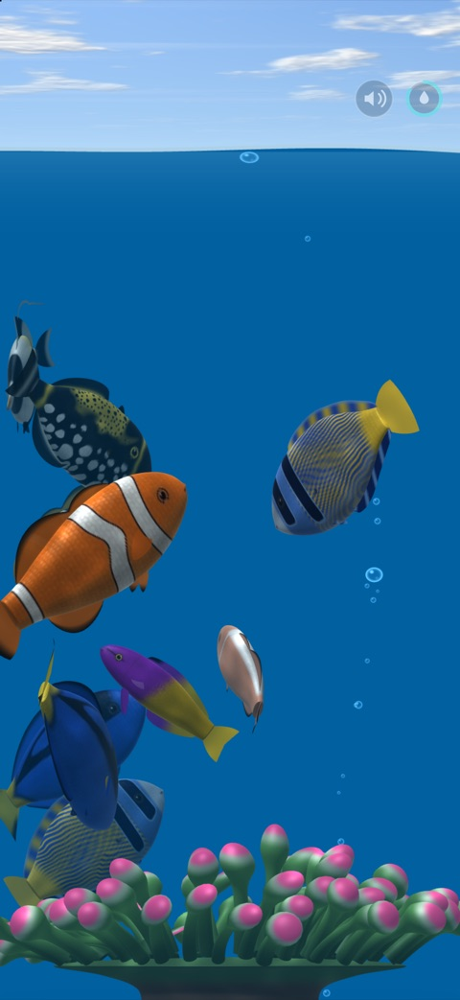
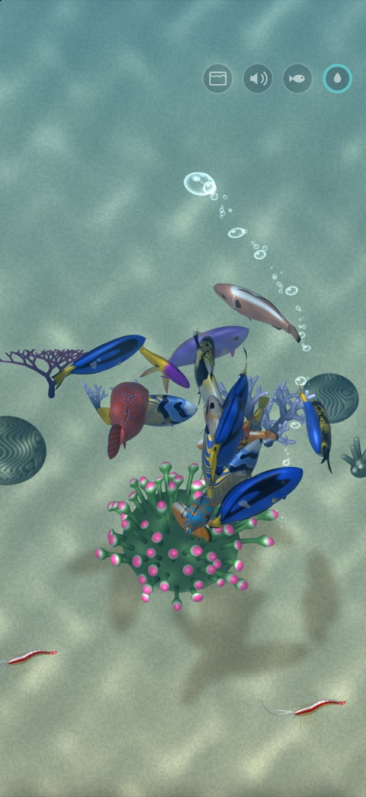
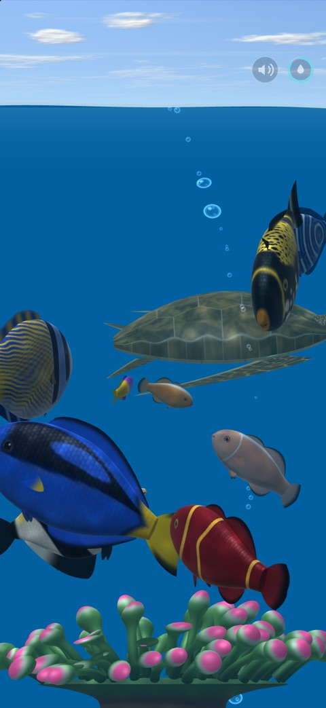
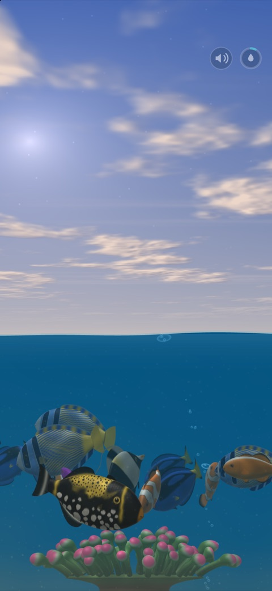
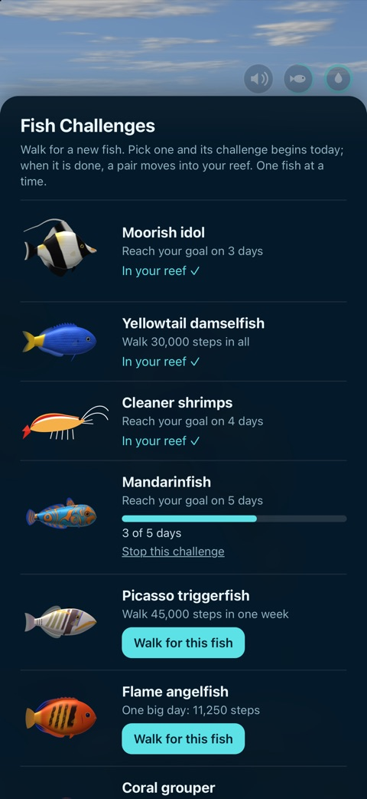
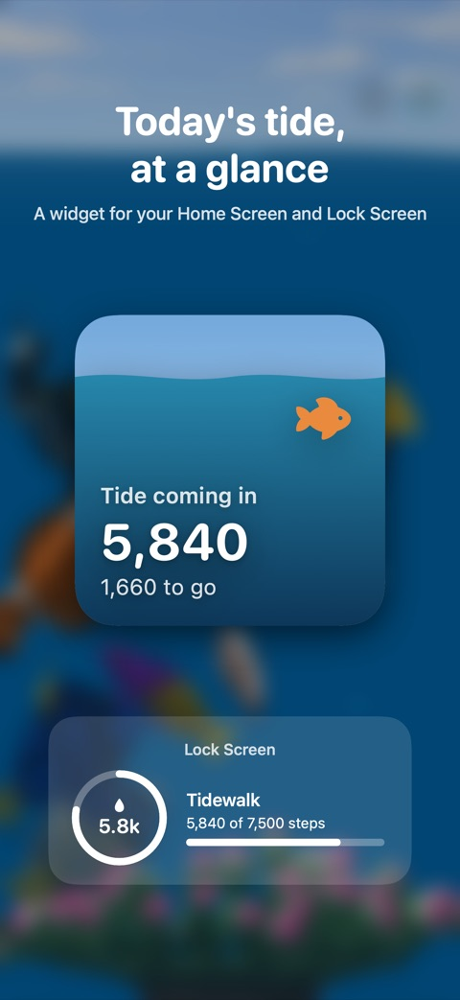
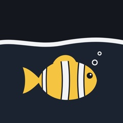

Press kit
Tidewalk is an iPhone app with a small coral reef that you keep going by walking.
You can use the text and images on this page in articles and reviews about Tidewalk. If you have questions, email me at jx7442soy@mozmail.com.
Fact sheet
- Name: Tidewalk
- Made by: Joep Rous, an independent developer
- Platform: iPhone with iOS 16 or later, plus a widget for the Home Screen and Lock Screen
- Released: 1 November 2026
- Price: free, without in-app purchases, ads or a subscription
- Privacy: the app doesn't collect any data and never connects to the internet
- Steps from: the iPhone itself, an Apple Watch, or any watch that syncs its steps to Apple Health
- Get it: search for “Tidewalk” in the App Store
Short description
Tidewalk shows a coral reef that depends on how much you walk. In the morning the tide is out and the water is hazy. As you walk, the water rises and clears. On days you reach your goal, a sea turtle may swim by or a couple gets young. On a missed day some pollution may drift in, which you can clear on a good day.
Long description
Tidewalk is a small coral reef on your iPhone. How it looks depends on how much you walk that day.
In the morning the tide is out and the water is hazy. The more you walk, the higher and clearer the water gets, and when you reach your goal it's high tide. On those days the fish are fed, a sea turtle or an eagle ray may swim past, and one of the couples gets young. Over the weeks new species arrive and coral grows on the bottom.
Each fish has a name and a partner, and they live for a couple of weeks, so you see generations come and go. You can tilt the phone and the water stays level, or tap once to look down on the reef from above.
There are no streaks to lose. If you skip a day, a bottle or an old fishing net may drift in, and on your next good day you can tap it away. No fish is ever harmed. The app is free, has no ads, and your step count stays on your phone.
Background
Tidewalk started as a flocking simulation. Each fish follows a few simple rules, such as staying near the others, not bumping into them and keeping close to its partner. Together that looks a lot like real fish. I connected the reef to my daily step count, so walking more makes the reef better. The fish are rendered in 3D on the phone itself, and the app works offline.
Features
- A 3D reef with clownfish, angelfish, a blue tang, triggerfish, a moorish idol, a mandarinfish and cleaner shrimps. Sometimes a sea turtle, an eagle ray, a barracuda or a great white swims by.
- The water rises and clears with your steps during the day.
- Good days bring young fish and, over time, new species. In Fish Challenges you can walk for a particular fish.
- Tap a fish to see its name, age and partner.
- When you tilt the phone the water stays level. One tap switches to a view from above.
- A widget shows today's tide on the Home Screen or Lock Screen.
- You set your own goal. There's a quiet sea sound, and the app sends two notifications a day at most.
Images
Screenshots are 1320 × 2868 pixels (iPhone 16 Pro Max). Click an image for the full size, or download them all (zip, 7 MB).


High tide

From above

A visitor

Morning, tide out

Fish Challenges

The widget